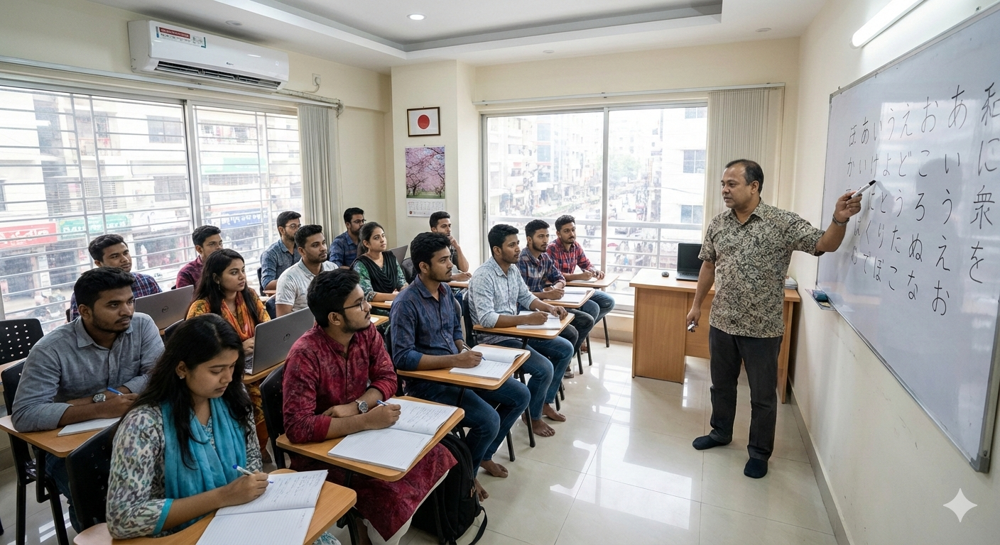
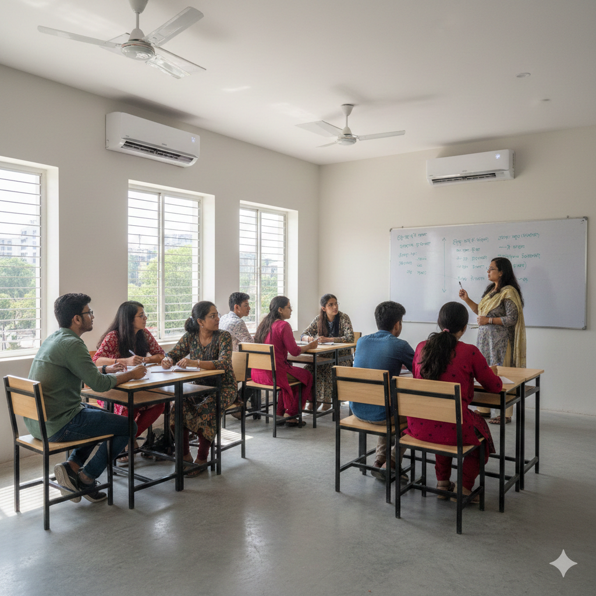

Begin Your Journey
to Japan with Confidence
Momiji offers comprehensive Japanese language training in Dhaka with a focus on academic excellence and cultural understanding. Our structured programs prepare students for success in Japan through disciplined, offline learning in small, personalized batches.
About Momiji
Momiji Japanese Language Academy is a specialized institute in Dhaka dedicated to preparing students for academic and professional success in Japan through disciplined, offline education.
Language Learning as a Disciplined Journey
At Momiji, we believe success in Japan requires more than passing an examination—it requires real communication ability, confidence, and cultural understanding.
- Consistent daily practice
- Direct teacher-student interaction
- Immediate correction of pronunciation
- Regular assessment and feedback
Japanese Language Courses
Choose your path to Japanese proficiency with our structured courses

Beginner Course
For students with no prior knowledge. Master Hiragana, Katakana, basic grammar, and essential conversation skills.
View Details
Intermediate Course
For students who have completed N5. Focuses on intermediate grammar, Kanji, and conversational fluency.
View DetailsIntensive Schedule: 3 Months • 6 Days/Week • 3 Hours/Day
Study in Japan
World-Class Education
Globally respected institutions with cutting-edge research facilities.
Affordable Tuition
Quality education at competitive costs compared to Western countries.
Part-Time Work
Legal 28 hours/week work permission for international students.
The Momiji Difference
What makes our Japanese language training unique in Dhaka

Japan-Only Focus
We specialize exclusively in Japanese language and culture.

Offline Discipline
Real-time correction and structured classroom learning.
Small Batches
Personal attention with only 10-15 students per class.
AC Classrooms
Comfortable, distraction-free environment for learning.
Japan-Only Focus
We specialize exclusively in Japanese language and culture.
Offline Discipline
Real-time correction and structured classroom learning.
Small Batches
Personal attention with only 10-15 students per class.
AC Classrooms
Comfortable, distraction-free environment for learning.
Our Teaching Approach
Textbook Based
Board Explanations
Speaking Drills
Listening Practice
Student Guidance
We provide honest, ethical guidance for students planning to study in Japan, including school selection, document preparation, and interview practice.
Important Notice: Visa approval decisions are made solely by the Japanese Embassy. Momiji provides guidance only and does not guarantee visa approval.
Ready to Start Your Journey?
Visit our Dhaka center today or contact us for enrollment.